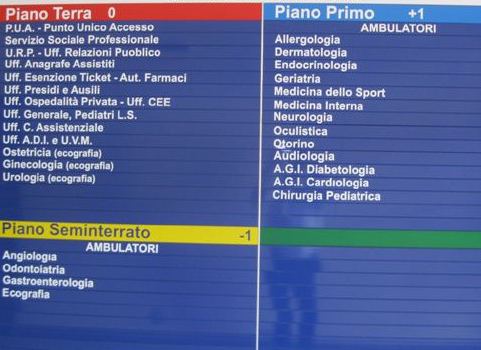

Sito che dà informazioni su chirurghi.
Questo sito riprende l'argomento introdotto nel corso di database.
Il mio progetto di database consisteva nella gestione degli interventi effettuati da chirurghi in vari ospedali.
Cliccando sui relativi link sarà possibile visualizzare:
Chirurghi
In questa sezione sarà possibile visualizzare l'elenco dei chirurghi presenti nel database,
con i relativi pazienti che hanno operato, e la sala operatoria in cui hanno operato.
Per andare nella pagina, Clicca qui: CLICCA QUI
Ospedale
In questa sezione sarà possibile visualizzare l'elenco degli ospedali presenti nel database,
con i relativi chirurghi in cui hanno e lavorano in quell'ospedale.
Per andare nella pagina, Clicca qui: CLICCA QUI
Reparti

In questa sezione sarà possibile visualizzare l'elenco dei reparti presenti nel database,
con i relativi chirurghi.
Per andare nella pagina, Clicca qui: CLICCA QUI